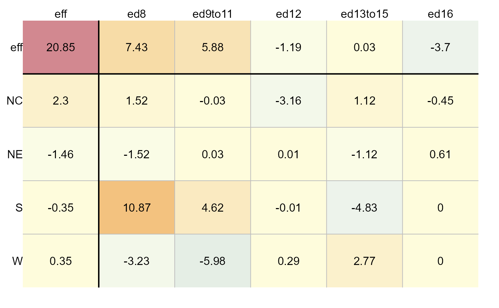
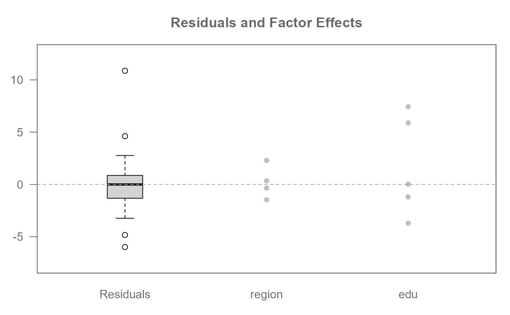
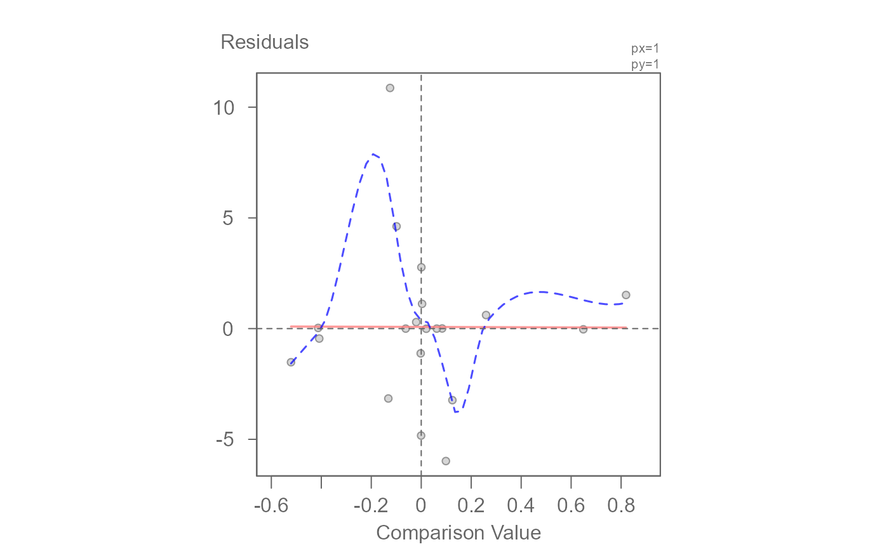
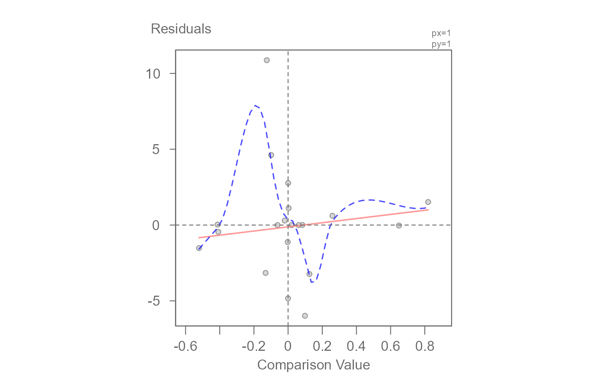

This is an S3 method for plotting objects of class eda_polish. It allows
visualization of different aspects of the analysis, including residuals,
cross-validation values, diagnostic plots, or effects.
Usage
# S3 method for class 'eda_polish'
plot(
x,
plot = "residuals",
add.cv = FALSE,
k = NULL,
col.quant = FALSE,
colpal = "RdYlBu",
colrev = TRUE,
col.eff = TRUE,
col.com = TRUE,
adj.mar = TRUE,
res.size = 1,
row.size = 1,
col.size = 1,
round = 2,
res.txt = TRUE,
margin.label = TRUE,
...
)Arguments
- x
An object of class
eda_polish, as produced byeda_pol.- plot
A character string specifying the type of plot to generate. Must be one of
"residuals","cv","diagnostic", or"effects".- add.cv
Logical. If
TRUE, adds kCV (k-fold cross-validation) values to the residuals plot. Requires specifyingk.- k
Numeric. The value of k for kCV. Required when
add.cv ==TRUE.- col.quant
Logical. If
TRUE, adopt a quantile color classification break.- colpal
A character string specifying the color palette to use for coloring plots. Must be a name listed in
hcl.pals(). Defaults to"RdYlBu".- colrev
Logical. If
TRUE, reverses the order of colors in the palette.- col.eff
Logical. Controls coloring for effects plots.
- col.com
Logical. Controls coloring for common effects.
- adj.mar
Logical. If
FALSE, adjusts graphical margins usingpar(mar = c(1.5, 1.5, 1.5, 1.5)).- res.size
Numeric. Controls the size of residual points or text.
- row.size
Numeric. Controls row element size.
- col.size
Numeric. Controls column element size.
- round
Numeric. Number of digits to round values for display (e.g., in tables).
- res.txt
Logical. If
TRUE, displays residual text.- margin.label
Logical. If
TRUE, displays labels text.- ...
Arguments passed on to
.eda_plot_vardecompdatA data frame in long form, containing the data to be plotted.
responseA character string specifying the name of the response variable column in the
datdata frame.typeA character string specifying the type of plot to generate. Must be either
"boxpnt"or"box".inputA character string.
"reg"= bivariate model input."nway"= univariate model or N-way table input.effA list of effect values. Required when
input = "nway".rotateLogical. If
TRUE, rotates the plot orientation.paddingNumeric. Controls padding for plot limits.
show.respLogical. If
TRUE, includes a boxplot for the response variable.outliersLogical. If
TRUE, outliers are displayed in boxplots.labelLogical. Controls whether labels are displayed.
orderLogical. Controls ordering (likely of factors or effects).
cex.txtNumeric. Controls text size.
limNumeric. Explicit limits for the plot axes.
overlapCharacter. Specifies how to handle overlapping points, must be one of
"stack","overplot", or"jitter".pchPoint symbol type. Only applicable if
type = "boxpnt".p.colPoint border color. Only applicable if
type = "boxpnt".p.fillPoint fill color. Only applicable if
type = "boxpnt".sizePoint size. Only applicable if
type = "boxpnt".alphaTransparency level for points (0 = transparent, 1 = opaque).
greyNumeric. Controls grayscale coloring for plot elements and axes.
titlePlot title. If title is to be omitted, set to
NULL.
Examples
# Generate median polish object
M <- eda_pol(inf_mort, region, edu, perc, plot = FALSE)
# Generate residuals plot
plot(M)

# Generate effects plot
plot(M, plot = "effects", label = TRUE)

# Generate diagnostic plot
plot(M, plot = "diagnostic")

#> int Comparison Value^1
#> 0.07621788 -0.03493527
# Add a robust regression line
plot(M, plot = "diagnostic", reg = TRUE, robust = TRUE)

#> int Comparison Value^1
#> -0.1204102 1.3688000